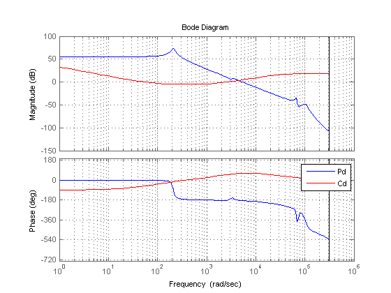
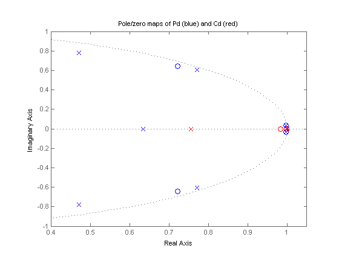
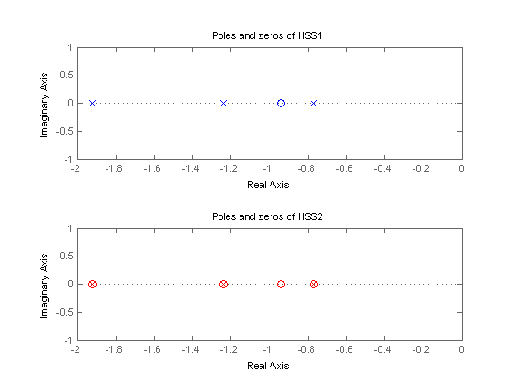
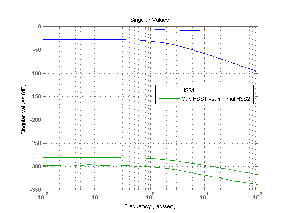

Using the Right Model Representation
This demo covers some best practices for working with LTI models.
Contents
Which Representation is Best Suited for Computations?
Using the Control System Toolbox™ software, you can represent LTI systems in four different ways:
- Transfer function (TF)
- Zero-pole-gain (ZPK)
- State space (SS)
- Frequency response data (FRD)
While the TF and ZPK representations are compact and convenient for display purposes, they are not ideal for system manipulation and analysis for several reasons:
- Working with TF and ZPK models often results in high-order polynomials whose evaluation can be plagued by inaccuracies.
- The TF and ZPK representations are inefficient for manipulating MIMO systems and tend to inflate the model order.
Some of these limitations are illustrated below. Because of these limitations, you should use the SS or FRD representations for most computations involving LTI models.
Pitfalls of High-Order Transfer Functions
Computations involving high-order transfer functions can suffer from severe loss of accuracy and even overflow. Even a simple product of two transfer functions can give surprising results, as shown below.
Load and plot two discrete-time transfer functions Pd and Cd of order 9 and 2, respectively:
% Load Pd,Cd models load numdemo Pd Cd % Plot their frequency response bode(Pd,'b',Cd,'r'), grid legend('Pd','Cd')
Next, compute the open-loop transfer function L = Pd*Cd using the TF, ZPK, SS, and FRD representations:
Ltf = Pd * Cd; % TF Lzp = zpk(Pd) * Cd; % ZPK Lss = ss(Pd) * Cd; % SS w = logspace(-1,3,100); Lfrd = frd(Pd,w) * Cd; % FRD
Finally, compare the frequency response magnitude for the resulting four models:
sigma(Ltf,'b--',Lzp,'g',Lss,'r:',Lfrd,'m--',{1e-1,1e3}); legend('TF','ZPK','SS','FRD')

The responses from the ZPK, SS, and FRD representations closely match, but the response from the TF representation is choppy and erratic below 100 rad/sec. To understand the loss of accuracy with the transfer function form, compare the pole/zero maps of Pd and Cd near z=1:
pzplot(Pd,'b',Cd,'r'); title('Pole/zero maps of Pd (blue) and Cd (red)'); axis([0.4 1.05 -1 1])
Note that there are multiple roots near z=1. Because the relative accuracy of polynomial values drops near roots, the relative error on the transfer function value near z=1 exceeds 100%. The frequencies below 100 rad/s map to |z-1|<1e-3, which explains the erratic results below 100 rad/s.
Pitfalls of Back-and-Forth Conversions Between Representations
You can easily convert any LTI model to transfer function, zero-pole-gain, or state-space form using the commands tf, zpk, and ss, respectively. For example, given a two-input, two-output random state-space model HSS1 created using
HSS1 = rss(3,2,2);
you can obtain its transfer function using
HTF = tf(HSS1);
and convert it back to state-space using
HSS2 = ss(HTF);
However, beware that such back-and-forth conversions are expensive, can incur some loss of accuracy, and artificially inflate the model order for MIMO systems. For example, the order of HSS2 is double that of HSS1 because 6 is the generic order of a 2x2 transfer matrix with denominators of degree 3:
order(HSS1)
ans =
3
order(HSS2)
ans =
6
To understand the difference in model order, compare the pole/zero maps of the two models:
subplot(211) pzmap(HSS1,'b') title('Poles and zeros of HSS1'); subplot(212) pzmap(HSS2,'r') title('Poles and zeros of HSS2');
Notice the cancelling pole/zero pairs in HSS2 depicted by x's inside o's in the pole/zero map. You can use the command minreal to eliminate cancelling pole/zero pairs and recover a 3rd-order, minimal state-space model from HSS2:
HSS2_min = minreal(HSS2); order(HSS2_min)
3 states removed.
ans =
3
Check that HSS1 and HSS2_min coincide by plotting the relative gap between these two models:
clf Gap = HSS1-HSS2_min; sigma(HSS1,Gap), grid legend('HSS1','Gap HSS1 vs. minimal HSS2','Location','Best')
The gap (green curve) is very small at all frequencies. Note that sigma warns that the Gap plot is "noisy" because the difference is so small that it essentially consists of rounding errors.
Because extracting minimal realizations is numerically tricky, you should avoid creating nonminimal models. See also Preventing State Duplication in System Interconnections for related insights.